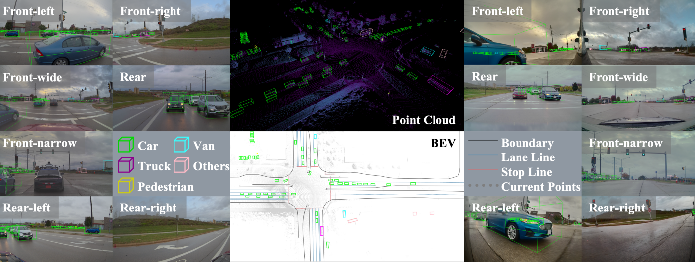
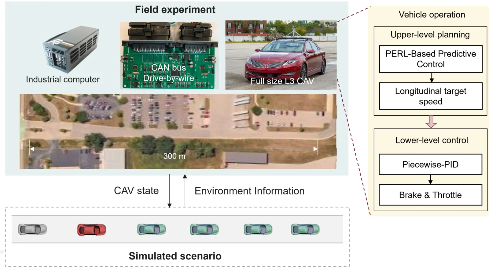
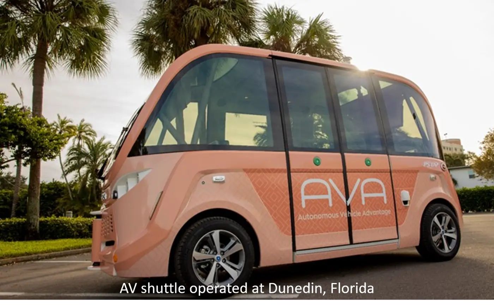

Dataset
CATS-V2V: A Real-World Vehicle-to-Vehicle Cooperative Perception Dataset with Complex Adverse Traffic Scenarios

This research evaluates and improves the safety and performance of connected and automated vehicles in challenging scenarios, including extreme weather, long-tail events, and interactions with vulnerable road users.

Communications in Transportation Research, 2024
Paper
Transportation Research Part A, 2025
Paper